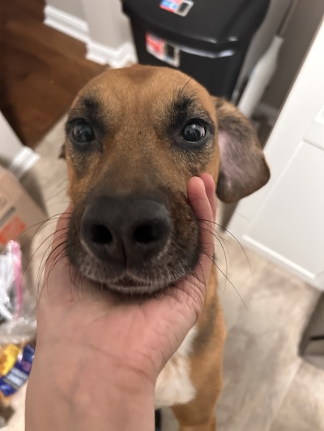

This is my dog Cody. He is 5 years old, turning 6 in december. He is a Border Collie German Shepherd Mix dog. He is also a nightmare sometimes. He is so precious and just likes to be pet by those in our family but he can be very reactive towards strangers.
A couple years ago he was attacked by an old family dog we had and that traumatized him very badly after. He is doing a lot better nowadays but he has his moments sometimes but we can't help but love him.
What he really likes to do is play with his stuffed mallard Harold. It smells horrendous but he brings it with him anywhere he goes and loves to carry it around when he wants to play with one of us, offering it himself towards us. I recently had to give it a wash since it smelt so bad and he sat in front of the washer that whole time waiting for him to come out.
He knows zero tricks and honestly lives for all the vibes at this point in time but we love him regardless of the barking and scratching he does to strangers. I also take my eyeliner inspiration directly from him.